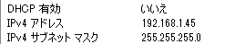

ローカルサーバーの構築
プロジェクトフォルダ内のindex.htmlをブラウザで直接開くとセキュリティーの関係上そのままでは開くことができません。
PC内にローカルサーバーを構築する必要があります。ここではその方法をご紹介します。
Windowsのローカルサーバー構築
Internet Information Serviceの有効化
- ［コントロールパネル］の［プログラム］をクリックします。
- ［Windowsの機能の有効化または無効化］をクリックします。
- ［Windowsの機能］内で、［インターネット インフォメーション サービス］をクリックして有効にします。
※チェックではなく塗りつぶされた状態
- ［OK］をクリックします。
ファイルの設置箇所
インターネット インフォメーション サービスを有効にすると、ローカルサーバー用のフォルダが自動で作成されます。そのフォルダ内にプロジェクトフォルダを設置します。
- ［コンピューター］→［ローカルディスクC:］をクリックします。
- ［inetpub］→［wwwroot］フォルダを開きます。
- ［wwwroot］フォルダ内にプロジェクトフォルダを設置します。
ブラウザーからのアクセス方法
- ブラウザーを開きます。
- アドレスバーに以下のとおりに入力して確定します。
http://(IPアドレス)/プロジェクトフォルダ名/
or
http://(コンピューター名)/プロジェクトフォルダ名/
or
http://localhost/プロジェクトフォルダ名/
例）http://192.168.0.1/プロジェクトフォルダ名/
コンピューター名の調べ方
- 適当なフォルダウィンドウを開き、サイドバーの［コンピューター］を右クリックし、［プロパティ］をクリックします。
- ［システム］ウィンドウの、［コンピューター名、ドメインおよびワークグループの設定］の中の、［コンピューター名］を確認します。

IPアドレスの調べ方
- ［コントロールパネル］の［ネットワークの状態とタスクの表示］をクリックします。
- ネットワーク接続状態画面の図の項目［接続：ローカルエリア接続］をクリックします。
- ローカルエリア接続の状態画面が出ますので［詳細］をクリックします。
- ［IPv4アドレス］の値がIPアドレスです。

localhostの設定方法
ブラウザでhttp://localhost/にアクセスするにはhostsファイルの設定が必要になります。
- ［スタート］ ボタンをクリックし、［すべてのプログラム］、［アクセサリ］ を順にクリックします。［メモ帳］ を右クリックし、［管理者として実行］ をクリックします。
- メモ帳の［ファイル］→［開く］をクリックし、［C:\Windows\System32\drivers\etc］に移動します。ここで［すべてのファイル］を選択しhostsファイルを開きます。
- ファイル内の下記の場所を変更して保存します。
■変更前# 127.0.0.1 localhost
■変更後127.0.0.1 localhost
- Windowsを再起動します。
Mac OSXのローカルサーバー構築
Macにはデフォルトでapacheがインストールされています。apacheを起動するとローカルサーバーを使用することができます。
apacheの基本操作
ターミナル上でコマンドを打ち、apacheを起動します。
apacheの起動
$ sudo apachectl start
apacheの終了
$ sudo apachectl stop
ファイルの設置箇所
下記の箇所にプロジェクトフォルダを設置します。
/Library/WebServer/Documents
※プロジェクトフォルダは新規プロジェクトを作成・保存したときに［場所］で設定した箇所にあります。
ブラウザーからのアクセス方法
- ブラウザーを開きます。
- アドレスバーに以下のとおりに入力して確定します。
http://localhost/プロジェクトフォルダ名/